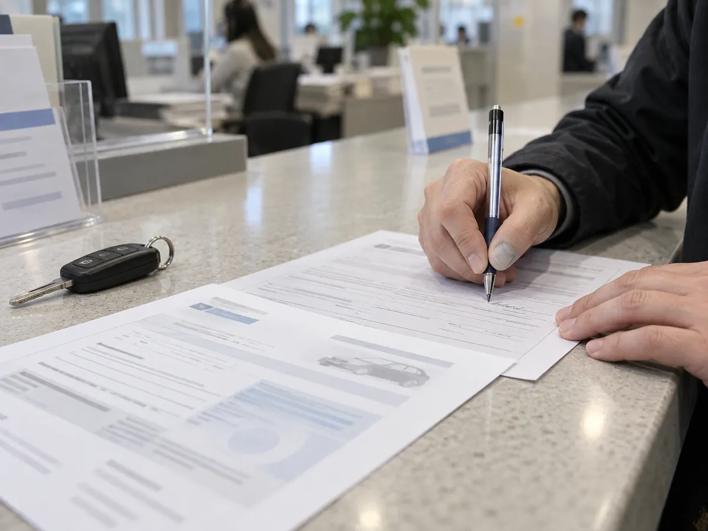
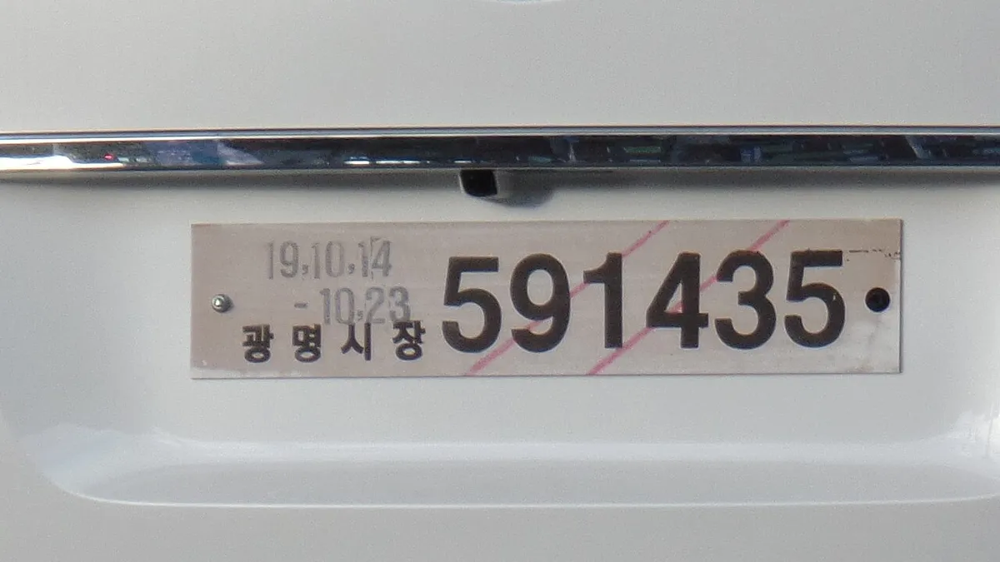
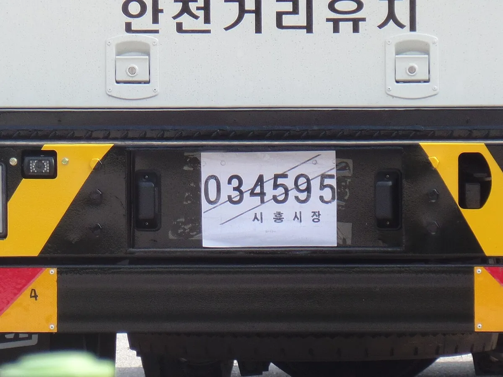
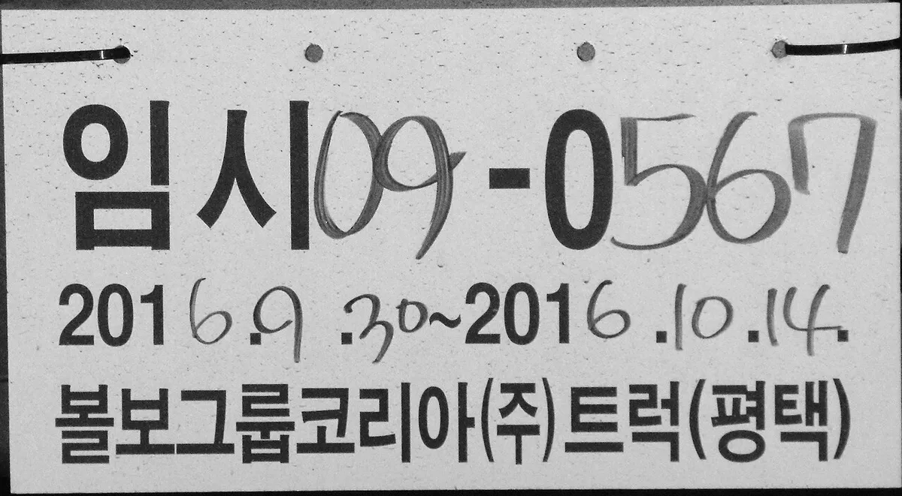

▲ 신차 계약자는 출고 과정에서 등록·번호판 발급 방식을 딜러에게 확인하는 것이 좋다 ⓒ CarPrism (AI 생성 이미지)
"번호판이 아직 안 나왔는데 일단 몰고 가도 되나요?" 신차를 출고받거나 등록 전 차량을 검사장으로 옮겨야 할 때 흔히 나오는 질문이다. 정답은 임시운행허가를 받고 임시운행허가번호판(가번호판)을 붙여야만 운행할 수 있다는 것이다. 자동차관리법 제27조가 근거이며, 지자체 차량등록사업소 안내를 종합하면 신규등록·검사 목적은 보통 10일 이내다. 이 글은 법령과 지자체 공식 안내를 교차해 정리하되, 지자체별로 표현이 다르거나 확인하지 못한 수치는 그대로 표시했다. (확인 기준일 2026년 9월 29일)
1. 임시운행허가, 언제 쓰나
자동차는 등록하고 번호판을 붙여야 도로에서 운행할 수 있다. 하지만 등록을 하려면 검사를 받아야 하는 등, 등록 전 차량을 잠깐 굴려야 하는 순간이 생긴다. 이때 쓰는 것이 임시운행허가다. 울산·부산·광주 등 지자체 안내에서 확인된 주요 목적은 다음과 같다.
| 목적 | 허가기간 | 비고 |
|---|---|---|
| 신규등록 신청, 신규·임시 검사, 전시차 이동 | 10일 이내 | 신차 출고 후 등록 전 이동이 대표적 |
| 수출 선적·정비 | 20일 이내 | 수출용 차량 |
| 자기인증 시험·특수장비 설치 | 40일 이내 | 제작·개조 과정 |
| 시험·연구 | 2년 이내 | 친환경·첨단미래형 자동차 개발·보급, 자율주행차 시험·연구는 5년 이내로 안내됨(생활법령정보·지자체 안내) |
| 기타 인정 사유 | 6개월 이내 | 부산·광주 안내 기준 |
▲ 신차 계약자는 출고 과정에서 등록·번호판 발급이 어떻게 처리되는지 딜러에게 확인하면 된다 ⓒ CarPrism (AI 생성 이미지)
📍 '이전등록 전 운행'과 '튜닝 검사'는?
중고차를 사고 이전등록 전에 운행하는 경우는 이미 번호판이 붙어 있는 차이므로 임시운행허가 목적으로 지자체 안내에서 확인하지 못했다. 튜닝 검사를 위한 이동 역시 '검사' 목적 해당 여부를 확인하지 못했으므로, 개별 사례는 관할 차량등록사업소나 자동차365에 문의해야 한다.
2. 유효기간과 연장 — 가장 헷갈리는 부분
가장 흔한 신규등록 목적은 10일이다. 광주시와 대전시 안내는 연장과 동일 목적 재신청이 불가하다고 밝히고, 광주시는 부득이한 경우 기간 내 반납 후 신규등록 절차를 밟으라는 취지로 안내한다. 일부 민간 사이트는 천재지변 등 부득이한 사유를 증명하면 1회 연장이 가능하다고 소개하지만 공식 문서에서는 확인하지 못했다. 기간 안에 등록이 끝나지 않을 것 같으면 만료 전에 관할 기관에 먼저 문의하는 것이 안전하다.
✅ 기간 관련 확인 포인트
· 허가증에 적힌 시작일과 종료일을 확인하고 달력에 표시
· 종료일까지 등록이 끝나지 못할 것 같으면 기간 만료 전에 문의
· 허가증·번호판은 기간 만료 후 5일 이내 반납으로 안내된다 (울산시 안내, 시행규칙 제29조 취지)
3. 신청 절차 — 창구와 온라인
임시운행허가 신청은 자동차관리법 시행규칙 제26조에 따라 별지 제16호서식의 신청서를 시·도지사(자율주행차는 국토교통부장관)에 제출하고, 허가되면 허가증이 발급된다. 지자체 안내를 종합한 절차는 다음과 같다.
| 단계 | 내용 |
|---|---|
| 1. 신청서 작성 | 임시운행허가 신청서, 소유자 신분확인 서류(대리 신청 시 위임장) |
| 2. 의무보험 준비 | 자동차책임보험 가입증명서 (필수) |
| 3. 목적별 서류 | 신규 출고는 제작증, 수입차는 수입신고필증, 수출은 관련 서류 등 목적별로 상이 |
| 4. 접수·발급 | 차량등록사업소 창구 접수 후 허가증과 번호판 수령. 온라인 신청이 가능한 지자체도 있음 |
| 5. 반납 | 기간 만료 후 5일 이내 (전국 무관할 반납 가능하다고 안내하는 지자체도 있음) |
▲ 임시운행허가는 차량등록사업소 창구에서 서류를 확인한 뒤 허가증과 번호판을 받는 방식이 기본이다 ⓒ CarPrism (AI 생성 이미지)
자동차 민원 온라인 서비스인 '자동차365'(자동차민원 대국민포털)는 신차 등록·이전등록·원부 발급 등 자동차 생애주기 민원을 온라인으로 처리하는 포털로 소개된다. 울산시 안내는 전국 무관할로 신청·반납이 가능하고 온라인서비스도 이용할 수 있다고 적었고, 광명시는 인터넷 신청이 가능하다고 안내한다. 다만 온라인으로 신청할 수 있는 범위와 번호판 수령 방식은 지자체마다 다르게 안내되고, 번호판은 실물이라 현장 수령이 필요한 것으로 보인다(공식 확인 필요). 정부24의 관련 안내는 자동 번역 요약본으로만 확인해 근거로 쓰지 않았다. 자동차365와 관할 사업소 공지를 함께 확인해야 한다. 자동차365 바로가기
4. 수수료와 비용
울산·부산·광주·용인·안양시 안내에서 임시운행허가 수수료는 모두 증지 1,800원으로 확인됐다. 안양시는 여기에 번호판 비용(단기 2,200원, 장기 10,900원)을 별도로 안내한다. 이 금액이 전국 공통인지, 최근 개정이 있었는지는 관할 사업소 최신 공지로 다시 확인하는 것이 좋다. 딜러나 등록대행 업체를 통하면 대행료가 별도로 붙을 수 있으므로 견적 항목을 확인해야 한다.

▲ 신청서와 책임보험 가입증명서, 신분확인 서류를 준비해 접수한다. 서류 내용은 실제 서식이 아닌 개념 이미지다 ⓒ CarPrism (AI 생성 이미지)
5. 가번호판은 어떻게 생겼나
가번호판은 지자체마다 형태가 다르다. 종이·목판·플라스틱 등 여러 재질이 쓰이며, 발급 지자체명과 번호, 허가기간이 표시된다. 아래는 위키미디어 커먼즈에 올라온 실제 사례로, 촬영 시기가 2016년 전후여서 현재 발급 서식과 다를 수 있다.

▲ 광명시장 명의의 임시운행허가번호판(목재 재질). 유효기간이 표시돼 있다 ⓒ Jhcbs1019 / Wikimedia Commons (CC BY-SA 4.0)

▲ 시흥시장 명의의 종이 인쇄식 임시번호판. 종이 형태는 훼손·유실에 유의해야 한다 ⓒ Jhcbs1019 / Wikimedia Commons (CC BY-SA 4.0)

▲ 평택 볼보그룹코리아 트럭의 플라스틱 임시번호판. 번호와 허가기간이 손글씨로 기재된 사례다 ⓒ Jhcbs1019 / Wikimedia Commons (CC BY-SA 4.0)
6. 운행 시 유의사항과 과태료
자동차관리법 제27조에 따라 임시운행허가를 받은 차량은 허가 목적과 기간의 범위에서 허가증을 소지하고 임시운행허가번호판을 붙여 운행해야 한다. 이를 어기면 다음과 같은 과태료 규정이 적용된다.
| 위반 행위 | 법 상한 (자동차관리법 제84조) | 부과 기준·지자체 안내 |
|---|---|---|
| 허가 목적 외 운행 | 300만원 이하 (제3항) | 시행령 별표 정리 자료 기준 1차 50만원 / 2차 150만원 / 3차 250만원 (광주·용인 안내와 일치) |
| 번호판 미부착 운행 | 300만원 이하 (제3항) | 위와 같은 50만원·150만원·250만원 구조로 안내됨 |
| 허가증·번호판 반납 지연 | 100만원 이하 (제2항) | 10일 이내 3만~5만원, 이후 1일 1만원 가산, 최고 100만원 (부산·대전 3만원, 안양 5만원 안내) |
⚠️ 금액을 확정해 인용하기 어려운 이유
법령은 최고액(상한)만 정하고 실제 액수는 시행령 별표의 부과기준이 정한다. 이번에 별표 원문은 직접 확인하지 못했고, 지자체 안내와 정리 자료를 교차한 결과가 위 표다. 반납 지연 초기 금액(3만원 대 5만원)은 지자체 안내 시점에 따라 다르게 적혀 있으며, 기간을 넘겨 운행한 경우의 금액도 안내가 갈린다(일 1만원 vs 목적 외 운행 수준의 50만원). 위키문헌에 올라온 자동차관리법은 2014년판이라 조·항 번호가 현행과 다르다. 최신 조문은 국가법령정보센터에서 확인해야 한다. 자동차관리법 제84조 바로가기
📍 임시운행허가 없이 운행하면
등록도 임시운행허가도 없이 도로에서 운행하는 것은 과태료 수준이 아니다. 생활법령정보는 미등록 자동차 운행 시 3년 이하 징역 또는 3천만원 이하 벌금 대상이 될 수 있다고 안내한다. 임시번호판을 받았더라도 허가 목적과 기간을 벗어나면 위 과태료 대상이 된다.
의무보험도 빼놓을 수 없다. 지자체 안내에는 신청 때 책임보험 가입증명서를 필수로 제출하도록 적혀 있다. 즉 등록 전이라도 보험 없이 임시번호판만으로 운행하는 것은 안 된다는 뜻이다. 운행 목적을 벗어나 장거리 이동·개인 용무에 쓰는 것도 주의해야 한다.
7. 신차 구매자가 딜러에게 확인할 것
신차는 보통 딜러나 제조사가 등록을 대행하는 경우가 많아 소비자가 직접 임시운행허가를 받는 일은 흔하지 않다. 그래도 출고 과정에서 임시번호판이 쓰일 수 있으므로 아래 항목은 미리 물어 두면 좋다. (아래 내용은 일반 실무 확인 사항이며, 출고 방식은 딜러·제조사마다 다르다.)
✅ 딜러 확인 체크리스트
· 출고 시점에 본번호판이 이미 발급·부착되어 오는지, 임시번호판으로 인도되는지
· 임시번호판이라면 허가 종료일과 본등록 예정일
· 임시운행허가 신청·반납 책임 주체(딜러 대행인지, 본인인지)와 반납 기한
· 임시번호판 상태로 보험 가입이 완료되어 있는지
· 등록·번호판 관련 비용 항목(대행 수수료, 번호판 비용, 증지 등) 내역 서면 확인
등록 전후의 서류와 관련해서는 자동차 등록증 재발급 가이드도 참고할 만하고, 출고 시점 체크는 신차 출고 대기 기간 기사, 인수 당일 점검은 신차 PDI 체크리스트와 함께 보면 도움이 된다.
8. 자주 묻는 질문
| 질문 | 확인된 답 |
|---|---|
| 10일이 지나면? | 기간 경과 운행은 과태료 대상이며, 허가증·번호판은 만료일부터 5일 이내 반납해야 한다 |
| 연장이 되나? | 광주·대전 안내는 연장과 동일 목적 재신청 불가. 예외는 공식 확인 필요 |
| 수수료는? | 증지 1,800원 (울산·부산·광주·용인·안양·대전 안내). 번호판 비용은 별도 안내하는 곳이 있음 |
| 보험이 필요한가? | 책임보험 가입증명서를 필수 서류로 안내 |
| 대리 신청은? | 위임장이 필요하다고 안내 (대전은 인감 등 서류 언급) |
| 불량 차량을 돌려줘야 하면? | 대전 안내는 결함 차량을 허가 기간 내 등록기관에 되돌려야 한다고 명시 |
| 건설기계·농기계도 되나? | 대전 안내는 건설기계·농업기계·궤도차 등은 대상에서 제외된다고 안내 |
✅ 허가증 받은 뒤 바로 할 것
· 허가증에 적힌 허가 목적·기간·차대번호가 맞는지 확인
· 번호판을 뒤쪽에 눈에 띄게 부착하고 허가증은 차 안에 비치
· 번호판 훼손·분실 시 발급 기관에 즉시 문의
· 본등록이 끝나면 임시번호판을 반납 기한(만료 후 5일) 안에 반납
9. 법령 확인 방법과 개정 여부
임시운행허가의 근거는 자동차관리법 제27조, 신청과 허가증 발급은 시행규칙 제26조, 반납은 시행규칙 제29조로 안내된다. 제27조는 제1항(등록 전 일시 운행 시 허가 필요), 제2항(허가증·번호판 발급), 제3항(허가 목적·기간 범위에서 번호판 부착 운행), 제4항(기간 만료 시 정해진 기간 내 반납) 취지로 확인됐다. 시행규칙은 허가 만료일부터 5일 이내 반납을 정한다. 다만 법제처 사이트 조문 전문은 도구 제약으로 여러 차례 시도에도 원문 그대로는 열람하지 못했고, 지자체 안내와 검색 요약으로 대조했다. 검색으로 확인된 시행규칙 중 2025년 2월 21일 시행 일부개정본이 있고 2026년 9월 15일 기준 조문 이력 페이지도 존재하지만, 제26조가 그사이 바뀌었는지는 확인하지 못했다. 정확한 기준은 국가법령정보센터의 현행 조문과 자동차365 공식 안내로 최종 확인해야 한다. 법령정보센터 바로가기
10. 요약
등록 전 차량은 임시운행허가를 받고 가번호판을 붙여야 운행할 수 있다. 신규등록·검사·전시차 이동은 10일, 수출은 20일 등으로 안내되며 수수료는 증지 1,800원, 신청 때 책임보험 가입증명서가 필수다.
목적 외 운행이나 번호판 미부착은 법상 300만원 이하, 반납 지연은 100만원 이하 과태료 대상이며 실제 금액은 시행령 별표 기준이라 지자체 안내가 일부 엇갈린다. 연장과 동일 목적 재신청은 광주·대전 안내상 불가다.
신차 출고 전에는 딜러에게 임시번호판 인도 여부, 허가 종료일, 반납 책임을 미리 물어 두자. (기준일 2026년 9월 29일)